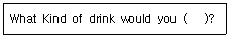
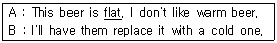
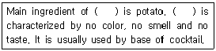
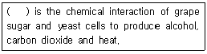

조주기능사 (2008-02-03 기출문제)
1과목: 주류학개론
1. 커피에 대한 설명으로 틀린 것은?
- 아라비카종의 원산지는 에티오피아이다.
- 초기에는 약용으로 사용하기도 했다.
- 발효와 숙성과정을 통하여 만들어 진다.
- 카페인이 중추신경을 자극하여 피로감을 없애준다.
(정답률: 81%)

2. 프랑스와인의 원산지 통제 증명법으로 가장 엄격한 기준은?
- D.O.C.
- A.O.C.
- V.D.Q.S.
- Q.M.P.
(정답률: 63%)
3. Black Russian에 사용되는 글라스는?
- Cocktail glass
- Old fashioned glass
- Sherry wine glass
- High-ball glass
(정답률: 73%)
4. Whisky를 만드는 과정이 순서대로 나열된 것은?
- Fermentation - Mashing - Distillation - Aging
- Distillation - Mashing - Fermentation - Aging
- Mashing - Fermentation - Distillation - Aging
- Mashing - Distillation - Fermentation - Aging
(정답률: 69%)
5. Aquavit에 대한 설명으로 틀린 것은?
- 감자를 맥아로 당화시켜 발효하여 만든다.
- 알코올 농도는 40-45% 이다.
- 엷은 노란색이다.
- 북유럽에서 만드는 증류주이다.
(정답률: 62%)
6. 다음 중 나머지 셋과 칵테일 만드는 기법이 다른 것은?
- Martini
- Grasshopper
- Stinger
- Zoom Cocktail
(정답률: 39%)
7. 전통민속주 중 모주(母酒)에 대한 설명으로 틀린 것은?
- 조선 광해군 때 인목대비의 어머니가 빚었던 술이라고 알려져 있다.
- 증류해서 만든 제주도의 대표적인 민속주다.
- 막걸리에 한약재를 넣고 끓인 해장술이다.
- 계피가루를 넣어 먹는다.
(정답률: 58%)
8. 주로 Blender를 사용하여 만드는 칵테일은?
- Mai Tai
- Seven and seven
- Rusty nail
- Angel's kiss
(정답률: 58%)
9. Rum 베이스 칵테일이 아닌 것은?
- Daiquiri
- Cuba Libre
- Mai Tai
- Stinger
(정답률: 60%)
10. 80Proof를 알코올의 도수(%)로 표시하면?
- 10%
- 20%
- 30%
- 40%
(정답률: 100%)
11. 다음 중 Agave의 수액을 발효하여 만든 술은?
- Tequila
- Aquavit
- Grappa
- Rum
(정답률: 86%)
12. 다음 중 Dry sherry의 용도로 가장 적합한 것은?
- Aperitif wine
- Dessert wine
- Entree wine
- Table wine
(정답률: 80%)
13. 우리나라 고유의 술로 liqueur에 해당하는 것은?
- 삼해주
- 안동소주
- 인삼주
- 동동주
(정답률: 63%)
14. 음료류와 주류에 대한 설명으로 틀린 것은?
- 맥주에서는 메탄올이 전혀 검출되어서는 안 된다.
- 탄산음료는 탄산가스압이 0.5kg/㎠인 것을 말한다.
- 탁주는 전물질 원료와 국을 주원료로 하여 술덧을 혼탁하게 제성한 것을 말한다.
- 과일·채소류 음료에는 보존료로 안식향산을 사용할 수 있다.
(정답률: 75%)
15. 다음 중 롱 드링크(long drink)에 해당하는 것은?
- Side car
- Stinger
- Royal fizz
- Manhattan
(정답률: 54%)
16. 주로 생맥주를 제공할 때 사용하며 손잡이가 달린 글라스는?
- Mug glass
- Highball glass
- Collins glass
- Manhattan
(정답률: 88%)
17. 다음 증류주에 대한 설명으로 틀린 것은?
- Gin은 곡물을 발효 증류한 주정에 두송나무 열매를 첨가한 것이다.
- Tequila는 멕시코 원주민들이 즐겨 마시는 풀케(Pulque)를 증류한 것이다.
- Vodka는 무색, 무취, 무미하며 러시아인들이 즐겨 마신다.
- Rum의 주원료는 서인도제도에서 생산되는 자몽(grapefruit)이다.
(정답률: 91%)
18. 안동소주에 대한 설명으로 틀린 것은?
- 제조 시 소주를 내릴 때 소주 고리를 사용한다.
- 곡식을 물에 불린 후 시루에 져 고두밥을 만들고 누룩을 섞어 발효시켜 빚는다.
- 경상북도무형문화재로 지정되어 있다.
- 희석식소주로써 알코올 농도는 20도이다.
(정답률: 72%)
19. 차와 코코아에 대한 설명으로 틀린 것은?
- 차는 보통 홍차, 녹차, 청차로 분류된다.
- 차의 등급은 잎의 크기나 위치 등에 크게 좌우된다.
- 코코아는 카카오기름을 제거하여 만든다.
- 코코아는 사이콘(syphon)을 사용하여 만든다.
(정답률: 58%)
20. 다음 중 증류주는?
- Bourbon
- Champagne
- Beer
- Wine
(정답률: 80%)
21. 다음 중 Cognac지방의 brandy가 아닌 것은?
- Remy Martin
- Hennessy
- Hiram walker
- Napoleon
(정답률: 32%)
22. 칵테일 잔의 밑받침대로 헝겊이나 두터운 종이로 만든 것은?
- Muddler
- Pourer
- Stopper
- Coaster
(정답률: 89%)
23. 이탈리아 와인에 대한 설명으로 틀린 것은?
- 거의 전 지역에서 와인이 생산된다.
- 지명도가 높은 와인산지로는 피에몬테, 토스카나, 베네토 등이 있다.
- 이탈리아의 와인등급체계는 5등급이다.
- 네비올로, 산지오베제, 바르베라, 독체토 포도품종은 레드와인용으로 사용된다.
(정답률: 72%)
24. 맥주의 원료 중 홉(hop)의 역할이 아닌 것은?
- 맥주 특유의 상큼한 쓴맛과 향을 낸다.
- 알코올의 농도를 증가시킨다.
- 맥아즙의 단백질을 제거한다.
- 잡균을 제거하여 보존성을 증가시킨다.
(정답률: 61%)
25. 토닉워터(Tonic water)에 대한 설명으로 틀린 것은?
- 무색투명한 음료이다.
- Gin과 혼합하여 즐겨 마신다.
- 식욕증진과 원기를 회복시키는 강장제 음료이다.
- 주로 구연산, 감미료, 커피 향을 첨가하여 만든다.
(정답률: 80%)
26. 다음 중 혼성주에 속하는 것은?
- Whisky
- Tequila
- Rum
- Benedictine
(정답률: 79%)
27. 탄산음료(carbonated drink)가 아닌 것은?
- Collins Mixer
- Soda Water
- Ginger Ale
- Grenadine Syrup
(정답률: 85%)
28. 다음 중 Sugar frost로 만드는 칵테일은?
- Rob Roy
- Kiss of Fire
- Magarita
- Angel's Tip
(정답률: 78%)
29. Old Fashioned에 필요한 재료가 아닌 것은?
- Whiskey
- Sugar
- Angostra Bitter
- Light Rum
(정답률: 60%)
30. 여러 종류의 술을 비중이 무거운 것부터 차례로 섞이지 않도록 floating하여 만드는 것은?
- Long Island Iced Tea
- Pousse Cafe
- Malibu Punch
- Tequila sunrise
(정답률: 64%)
2과목: 주장관리개론
31. 칵테일 조주 시 술의 양을 계량할 때 사용하는 기구는?
- squeezer
- Measure cup
- Cork screw
- Ice pick
(정답률: 80%)
32. 뜨거운 물 또는 차가운 물에 설탕과 술을 넣어서 만든 칵테일은?
- Toddy
- Punch
- Sour
- Sling
(정답률: 42%)
33. 백포도주를 서비스 할 때 함께 제공하여야 할 기물은?
- Bar spoon
- Wine cooler
- Muddler
- Tongs
(정답률: 87%)
34. 효과적인 주장 음료관리 방법으로 잘못된 것은?
- 주문 시에는 서면구매 청구서를 사용한다.
- 검수 시에는 송장과 구매 청구서를 대조, 체크한다.
- 영속적인 재고조사 시스템을 둔다.
- 바의 간이창고에는 한 달분의 재료를 저장한다.
(정답률: 75%)
35. 다음 중 가장 Dry한 표기는?
- Brut
- Sec
- Doux
- Demi sec
(정답률: 50%)
36. 다음 중 칵테일 재료선택 방법 및 보관방법으로 틀린 것은?
- 과실은 신선하고 모양이 좋은 것을 선택하고 냉장고에 보관한다.
- 계란은 껍데기가 매끄럽고, 흔들었을 때 소리가 나는 것을 선택한다.
- 탄산음료는 구입 시 병마개가 녹슬지 않았는지 확인한다.
- 포도주는 병을 눕혀 코르크마개가 항상 젖은 상태로 보관해야 한다.
(정답률: 70%)
37. Short drink 칵테일이 아닌 것은?
- Martini
- Manhattan
- Gin & Tonic
- Bronx
(정답률: 57%)
38. 다음 중 주세법상 발효주류에 해당하지 않는 것은?
- 소주
- 탁주
- 약주
- 과실주
(정답률: 75%)
39. Champagne 서브 방법으로 옳은 것은?
- 병을 미리 흔들어서 거품이 많이 나도록 한다.
- 0~4°C 정도의 냉장온도로 서브한다.
- 쿨러에 얼음과 함께 담아서 운반한다.
- 가능한 코르크를 열 때 소리가 크게 나도록 한다.
(정답률: 75%)
40. Corkage Charge의 의미는?
- 고객이 다른 곳에서 구입한 주류를 바(Bar)에 가져와서 마실 때 부과되는 요금
- 고객이 술을 보관할 때 지불하는 보관 요금
- 고객이 Bottle 주문 시 따라 나오는 Soft Drink의 요금
- 적극적인 고객 유치를 위한 판촉비용
(정답률: 90%)
41. 다음 중 나무딸기 시럽은?
- Grenadine Syrup
- Maple Syrup
- Raspberry Syrup
- Plain Syrup
(정답률: 80%)
42. 재고가 과도한 경우의 단점이 아닌 것은?
- 판매 기회가 상실된다.
- 식재료의 손실을 초래한다.
- 필요 이상의 유지 관리비가 유지된다.
- 기회 이익이 상실된다.
(정답률: 76%)
43. 다음 중 Rum의 맛에 의한 분류로 옳은 것은?
- Light Rum : 향신료를 첨가한 것이 특징이다.
- Heavy Rum : 색과 향이 가장 진한 럼으로, 단식증류기를 사용하여 증류한다.
- Flavored Rum : Light Rum 과 Heavy Rum의 중간 타입을 말한다.
- Medium Rum : 가볍고 깔끔한 맛을 가진 Rum을 말한다.
(정답률: 89%)
44. Gin fizz를 서브할 때 사용하는 글라스는?
- cocktail glass
- champagne glass
- liqueur glass
- High-ball glass
(정답률: 62%)
45. 다음 중 주로 Tropical cocktail 조주할 때 사용하며 "두들겨 으깬다."라는 의미를 가지고 있는 얼음은?
- Shaved Ice
- Crushed Ice
- Cubed Ice
- Cracked Ice
(정답률: 71%)
46. Par Stock은 무엇을 의미하는가?
- 식음료 재료저장
- 식음료 예비저장
- 영업에 필요한 적정 재고량
- 영업 후 남아 보관하여야 할 상품
(정답률: 78%)
47. 다음 중 Bitters란?
- 박하냄새가 나는 녹색의 색소
- 칵테일이나 기타 드링크류에 사용하는 향미제용 술
- 야생체리로 착색한 무색투명한 술
- 초콜릿 맛이 나는 시럽
(정답률: 84%)
48. 다음 중 병행복발효주는?
- 와인
- 맥주
- 사과주
- 청주
(정답률: 48%)
49. 원가의 분류에서 고정비에 해당하는 것은?
- 직접재료비
- 직접노무비
- 공장건물에 대한 보혐료
- 일정비율로 지급되는 판매수수료
(정답률: 48%)
50. 레스토랑에서 사용하는 용어인 “Abbreviation"의 의미는?
- 헤드웨이터가 몇 명의 웨이터들에게 담당구역을 배정하여 고객에 대한 서비스를 제공하는 제도
- 주방에서 음식이 미리 접시에 담아 제공하는 서비스
- 레스토랑에서 고객이 찾고자 하는 고객을 대신 찾아주는 서비스
- 원활한 서비스를 위해 사용하는 직원 간에 미리 약속된 메뉴의 약어
(정답률: 58%)
3과목: 고객서비스영어
51. 다음 ( ) 안에 가장 알맞은 것은?

- like to
- like
- have to
- has
(정답률: 87%)
52. 다음 중 다른 보기들과 의미가 다른 하나는?
- May I take your order?
- Are you ready to order?
- What would you like, Sir?
- How would you like, Sir?
(정답률: 72%)
53. 다음 밑줄 친 단어의 의미는?

- 시원한
- 맛이 좋은
- 김이 빠진
- 너무 독한
(정답률: 75%)
54. 다음 중 ( ) 안에 알맞은 것은?

- Brandy
- Gin
- Vodka
- Whisky
(정답률: 78%)
55. What is the liqueur made by orange peel originated from Venezuela?
- Drambuie
- Grand Marnier
- Benedictine
- Curacao
(정답률: 34%)
56. 다음 중 ( ) 안에 알맞은 것은?

- Distillation
- Maturation
- Blending
- Fermentation
(정답률: 48%)
57. Which one is basic liqueur among the cocktail name which containing "Alexander"?
- Gin
- Vodka
- Whisky
- Rum
(정답률: 30%)
58. "I feel like throwing up. " 의 의미는?
- 토할 것 같다
- 기분이 너무 좋다.
- 공을 던지고 싶다.
- 술을 마시고 싶다.
(정답률: 75%)
59. Which one is distilled from fermented fruit?
- Gin
- Wine
- Brandy
- Whisky
(정답률: 40%)
60. “All tables are booked tonight" 과 의미가 같은 것은?
- All books are on the table.
- There are a lot of tables here.
- All tables are very dirty tonight.
- There aren't any available tables tonight.
(정답률: 62%)